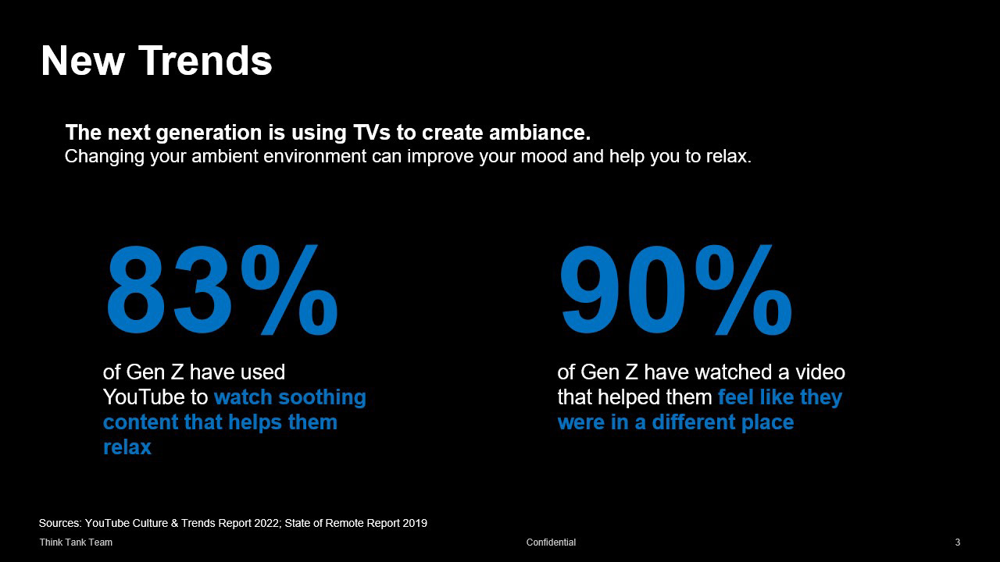
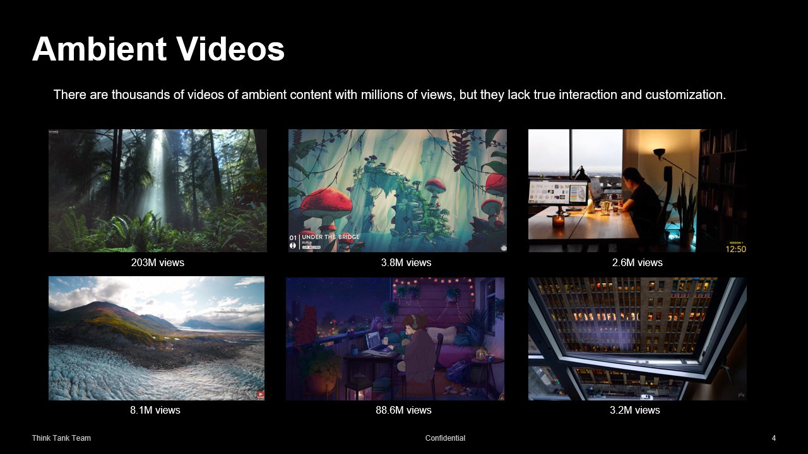
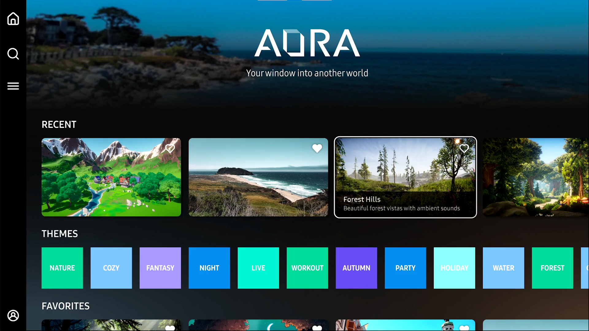
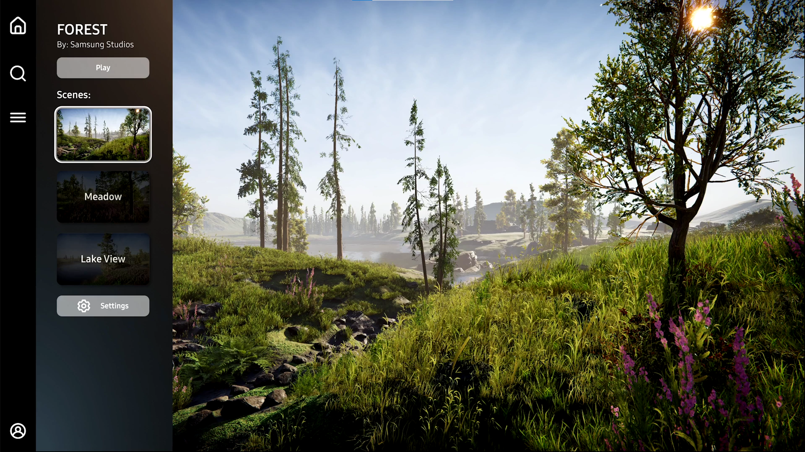
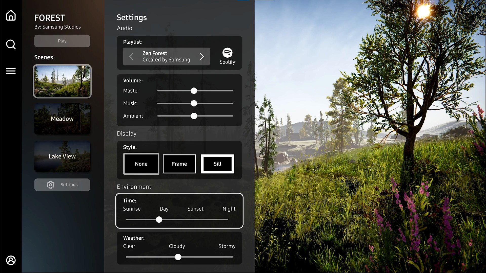
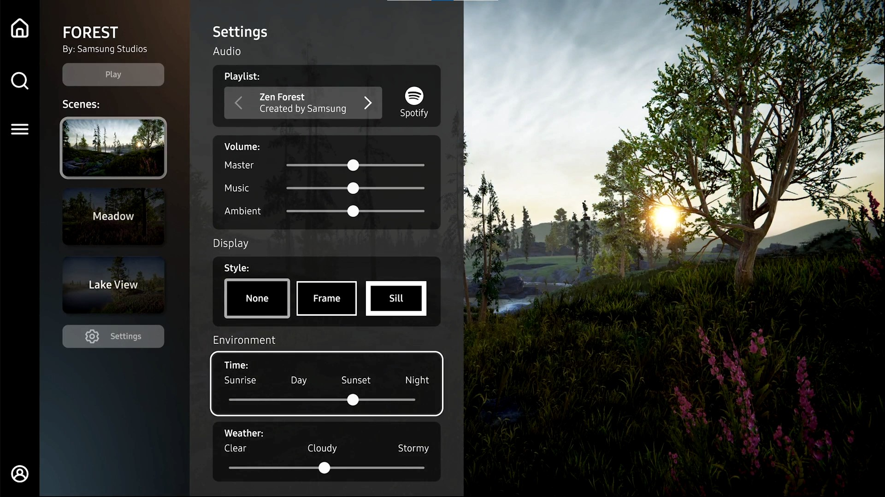

Personal contributions
- Unity 3D environment design, lighting, sound, VFX
- RealSense installation and calibration
- Motion Tracking ML algorithm calibration
- Unity UI and functionality elements using C#
- Figma UI layouts and design
- Multi-plane image creation
- Live demo structuring and prototyping
- Demo and promo materials: animations, video, images, presentation
- In-person demo runs and presentation
Window into Another World
Project Aura originated in the wellbeing category by re-imagining indoor spaces. With Aura user can choose between real locations and virtual scenes. They can customize the environment by changing time, weather, audio or other settings to match their mood. It enables users to interact with the environment via motion tracking and attention monitoring.


Audio-visual ambient experience
The idea of the project derived from our research focusing on contemporary uses of TV's in house holds, such as creating ambiance and relaxing or studying without distracting content. We have looked into variety of precedents and built a case to improve existing experience by making it more dynamic and customizable. The experience was designed as part of the Samsung TV ecosystem, UI elements were catered towards TV and remote control functionality with sleek modern look.




Audio-visual ambient experience
The idea of the project derived from our research focusing on contemporary uses of TV's in house holds, such as creating ambiance and relaxing or studying without distracting content. We have looked into variety of precedents and built a case to improve existing experience by making it more dynamic and customizable. The experience was designed as part of the Samsung TV ecosystem, UI elements were catered towards TV and remote control functionality with sleek modern look.
Innovative approach
Through ideation and prototyping I have explored variety of motion tracking techniques that could be used on Samsung TV. First demo was built using RealSense camera, motion tracking algorithms and fully detailed 3D world built in Unity. This version of the demo required more processing power than we could have on TV without additional processing units. To solve the GPU and memory problems I have turned to exploring built-in TV sensors and 2.5D world approach, which required multi-plane image structure and made the demo possible as TV application without turning towards external resources.